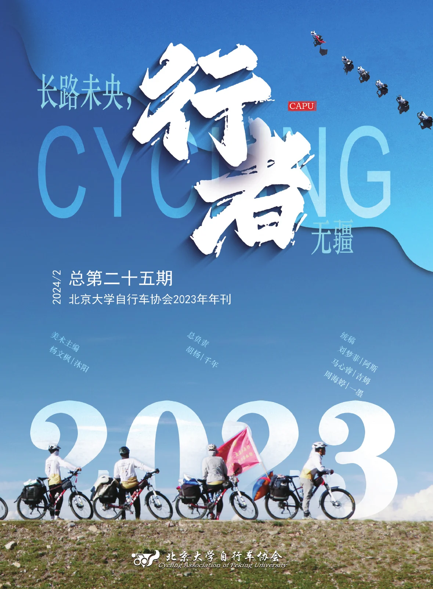

目录
- CAPU 行者骑迹 28 年4
- 2023 车协年大事记6
- 卷首语 · 步步且前前dudu8
暑期特写
实践团
- 人物志全体团员14
- 路吉姆18
- 不为谁而作的歌团子二号19
- 大冬树山的雨雾毛球22
- 七月的最后一天芋圆24
- 沉淀kx26
- 出刚察记长河27
- 崆峒山游记鹤临30
- 寺路易十六32
- 单车上逐日不是真菌的假菌33
骑行团
- 人物志全体团员37
- 骑行日志全体团员42
- 永远记住 永远怀恋 向着未来翠翠 r48
- 暑期结束后的一点碎碎念和我的后暑期时代飞歌49
- 一朝入梦终不醒青鸟56
- 我用一种蓝来想你奶油小狗58
- 我记得菜叶子62
- 补胎片的故事冰苎64
- 我的暑期团牛肉汤圆66
- 团长手记沐阳67
飞行团
- 人物志全体团员73
- 暑期印痕全体团员77
- 只是我又该向何处诉说，向何处去呢？阿斯82
- 那些曾经出现过的或者失去过的雾路85
- Ⅹ——十的暑期随想月霜89
- 慢慢地迈向听朝乐迪93
- 团长手记支原体95
行者足音
- 白河堡的风，与此刻最珍贵的宝物Libby101
- Everglow飞舟106
- “爱”与车协的三重关系马丁110
- 再见妙峰山小豹112
- 三上鬼笑石余割115
此刻回首
- 23 松山·重温离别蛋糕等于鬼121
- 我，音乐，骑车木山124
- 川藏简记孟德127
- 过客的光阴chocho133
- 恍回首鹤临134
附
- 第二十七届执委会主席团总结136
- 2024 年暑期远征路线144
编委
- 主办
- 北京大学自行车协会
- 总负责
- 胡杨 | 千年
- 美术主编
- 杨文枫 | 沐阳
- 统稿
- 刘梦菲 | 阿斯、马心睿 | 吉姆、周海婷 | 一墨
- 审稿
- 都业婷 | dudu、李健宁 | 小笨熊、刘锦帆 | 土龟、刘竞源 | 牛肉汤圆、刘梦菲 | 阿斯、马心睿 | 吉姆、毛开源 | 毛球、任致远 | 支原体、杨文枫 | 沐阳、周海婷 | 一墨
- 校对
- 陈锦洋 | 归尘、都业婷 | dudu、李健宁 | 小笨熊、刘梦菲 | 阿斯、王逸微 | 山楂糕、杨文枫 | 沐阳、张晓倩 | 椰汁、周海婷 | 一墨